fruito
A self-published iOS fruits management app
Research, design, co-develop | March 2015-May 2015
-
Fruito is a self-published iPhone app. It keeps track of fruit purchasing history and recomments various kinds of in season fruits. It also offers a custom reminder system to help develop a healthy habit of eating fruit regularly. Fruito greatly improves the fruit management experience.
-
Open fruito for the first time.
-
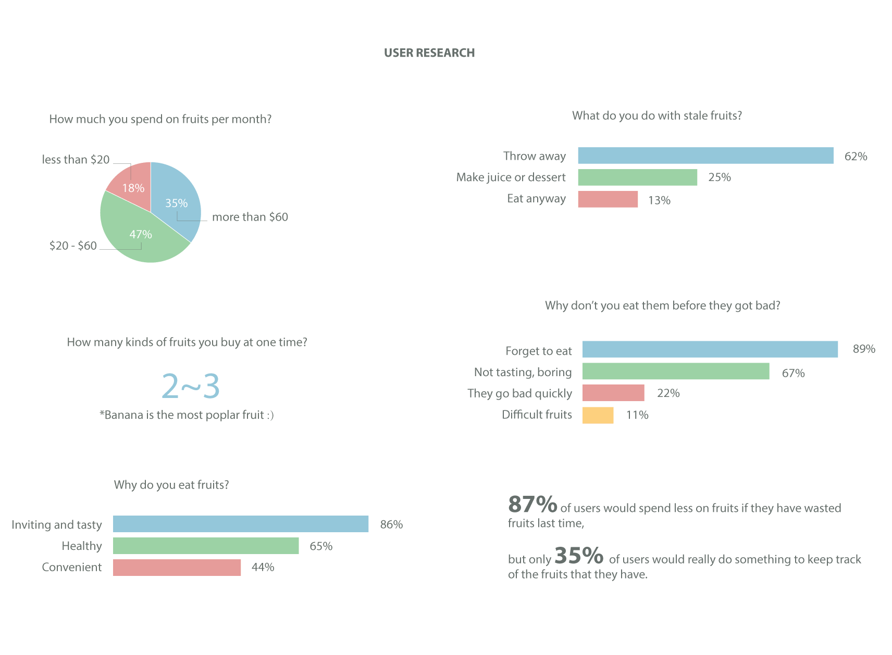
Oops, the bananas’ have gone bad again!
You must be familiar with this scenario, you pull fruit of out of your shopping bag and put them into the refrigerator. Several days later, you find rotting fruit in your refrigerator and can’t remember when you bought them.
-
After defining the target users, not knowing how to store fruits correctly or when to eat them causes tons of fruit to be thrown away, which means the time and money you invested in them are also thrown away.
However, most of people choose to avoid this situation which indicates that existing solution is not satisfying. Writing down the fruits that they have or making plans to eat fruits reduces joy for eating fruits.
-
Mapping design problems
In terms of conveying knowledge on the fruit’s temper, such as their preferred storage location and the best period to enjoy them, I decided to create a mobile application. The core feature of the app would be to provide the right way to store fruits and keeping track of what fruits a user has, also fun process.
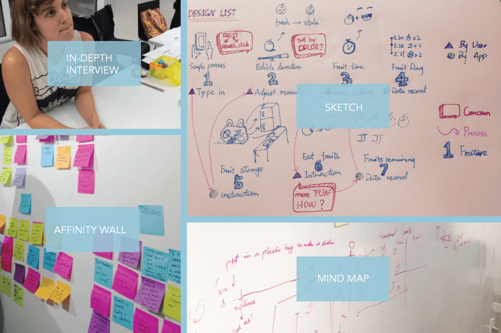 -
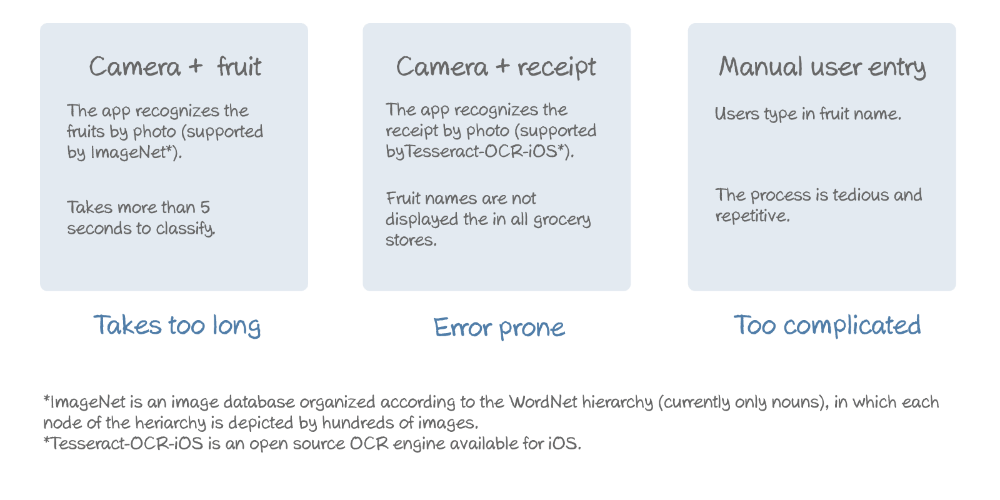
Early stage concepts
After mapping the design problems to user behavior, I focused on simplifying the way of inputting fruit into the application and how to interact with them.
-
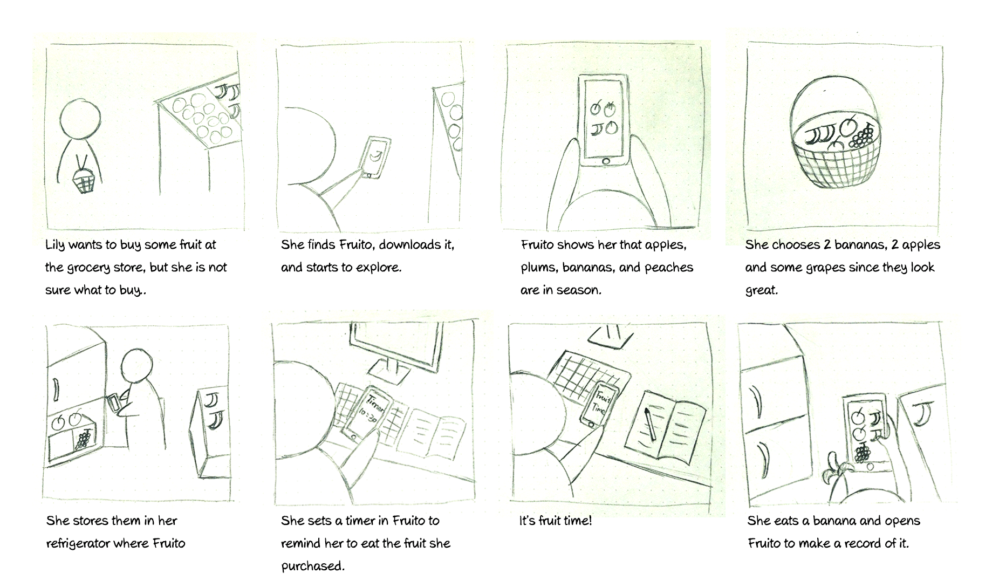
Seasonal fruits make for a better solution.
Displaying seasonal fruit on the main interface recommends users to eat healthier and make it easier to input the fruit they purchased. With this idea I developed a persona profile of my target users. I then picked a specific scenario to determine how my solution could help.
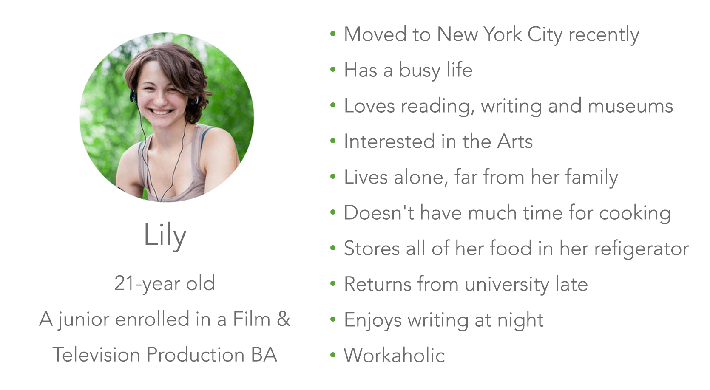 -
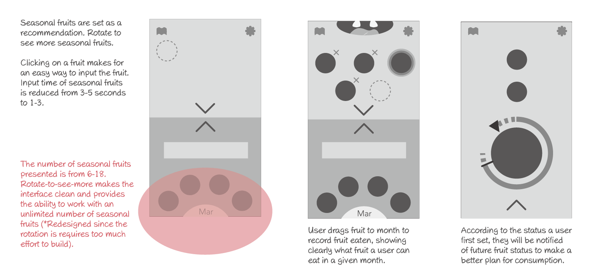
Conveying the idea to design
After researches about seasonal fruits, I made a sheet about the storing way of 29 common and popular fruits and the time they are in season.
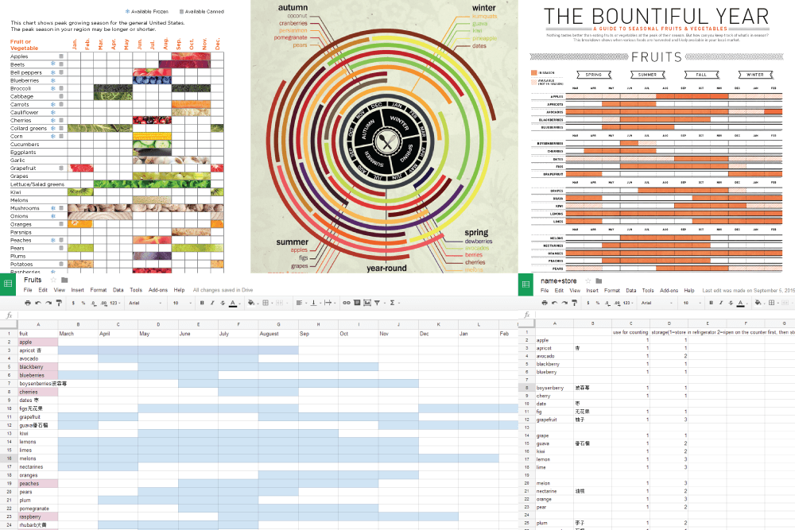Seasonal fruits vary in different places, so it works best for New Yorkers.
According to the thumb zones map by Luke Wroblewski, I arranged user interaction elements according to frequency of expected use.
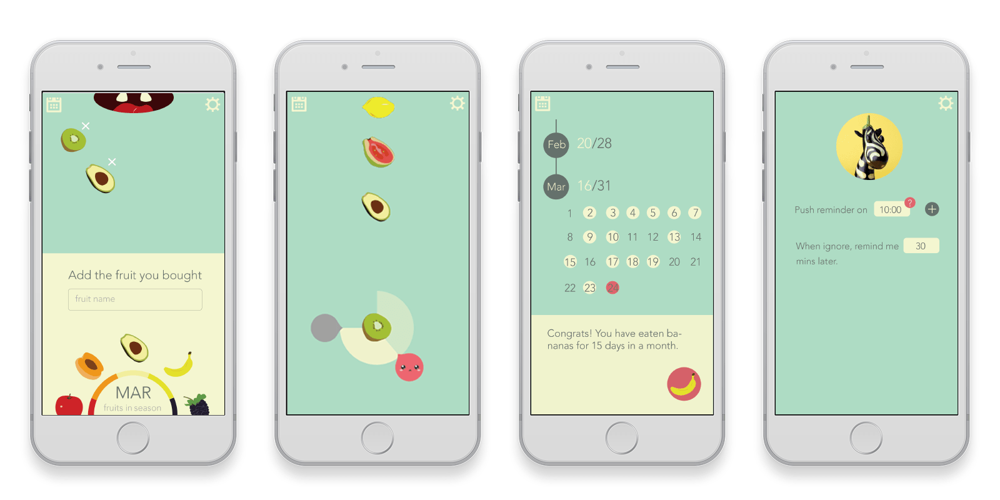Since I intended to have the interface clear and wordless, I kept the shape and colors of real fruits. This gave me particular difficulty in finding the perfect color scheme.
UI of version 1.0
Interactive prototype build with InVision
-
If the “edible time” is not accurate,
it is useless.Since fruit becomes rotten for many reasons, inaccurate “edible time” made adjusting the initial status of fruits useless rather than playful. Based on A/B testing, people preferred not having the feature rather than setting the time themselves. I deleted this feature and took a step back to dig deeper into the connection between every step of the app.
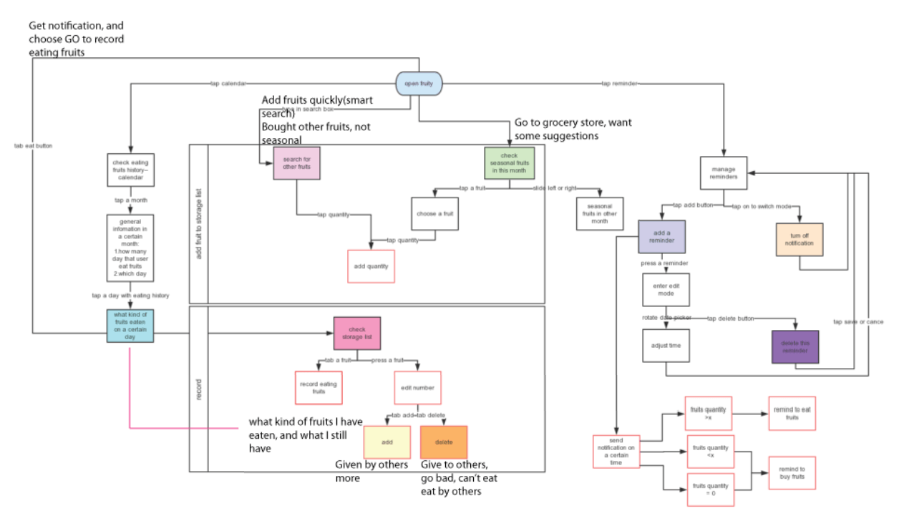Creating a new tool from the old one to
refine the designI had no further luck with following Design Process, or UX, books on how to develop my app further. Armed with a list of questions, user’s interactions with the app, and the situations I wanted to solve, I sought out ways to simplify the design.
Workflow + Operation + Scenarios
-
Designing with users
WholeFoods was a great place to find my target users. With their feedback, I simplified the interface by creating a character with facial expressions like blinking, opening mouth, and chewing that users could interact with.
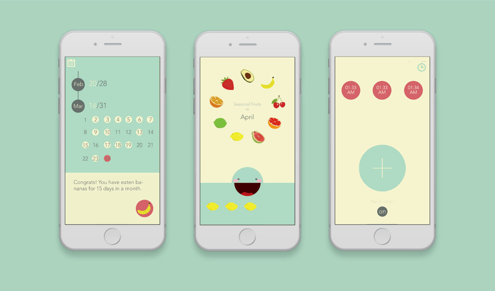UI of version 2.0
-
Bringing the vision to reality
I was lucky to be able to partner with a developer. Time differences didn’t cause too many problems since we communicated with Skype and Google Drive. With clear priorities of tasks and thinking as a developer/designer we saved a lot of time of waiting on each other’s owrk. We completed the app in 12 weeks. I set up a responsive website for Fruito and received a lot of valuable feedback on demo day. I was so glad that people loved playing with and and I had all my fruit eaten at the show!
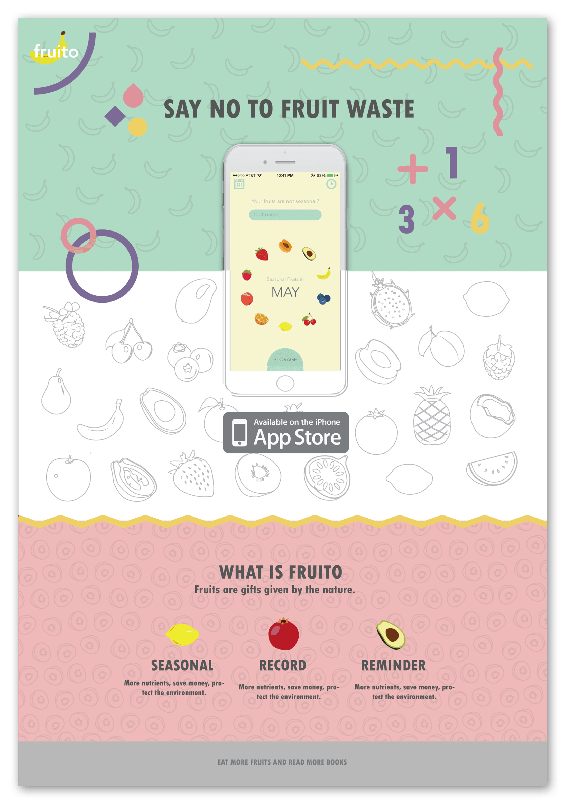website displaying on a laptaop
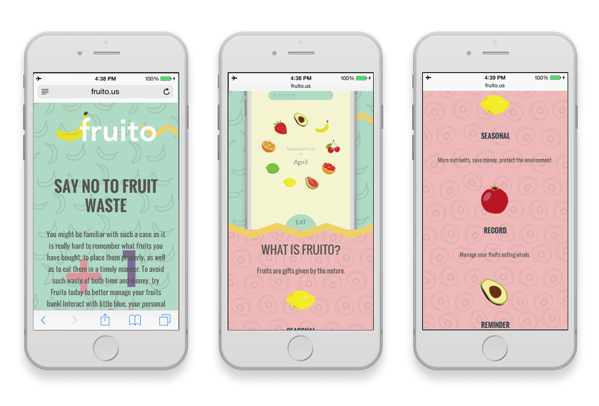website displayed on an iPhone 6
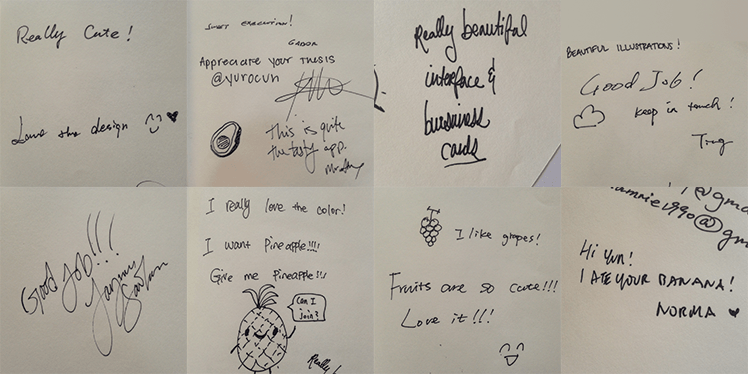It seems that pineapples have lots of fans!
-
What's new about Version 2.0?
For the coming version, more suggestions about storing fruits and the creative way to deal with stale fruits would be added. Data visualization about fruits eating medical contraindications would encourage people enjoying fruits scientifically. (My grandma has diabetes, watermellons are dangerous for her.)
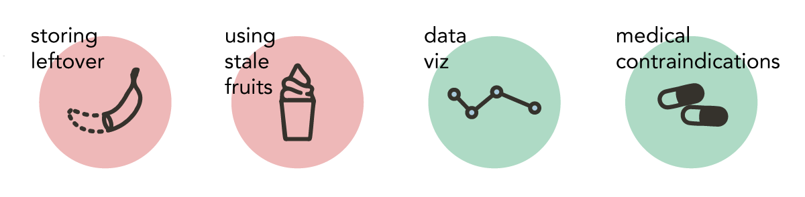 -
-
If you have feedback about this project, please comment on Medium.